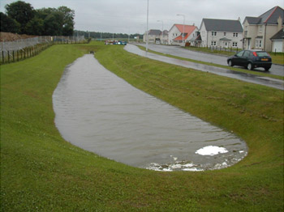
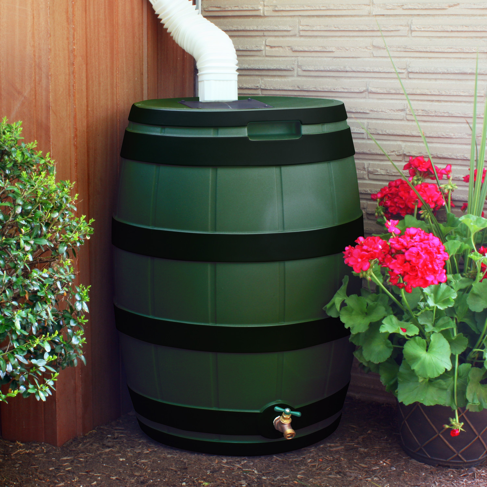

This tool is designed for customers of municipal utilities to calculate their estimated yearly fees and find recommendations for green infrastructure.
To help address the issues of flooding and combined sewage overflows (CSOs), the City of South Bend passed Ordinance No. 5253-70, mandating that all downspouts be disconnected from the sewer system by January
2021; however, the city is still offering its Downspout Disconnection Program for residential properties. Any customer that is unable
to disconnect their downspout can pay a one-time “In-Lieu-of” fee, which will be assessed based on impervious area.
Additionally, a stormwater fee has been exacted. Currently, this fee is a flat $2 per month for residential properties, and $5 per month for all other properties. However, in the future the fee for
nonresidential properties will be scaled based on impervious area. By implementing green stormwater infrastructure (GSI) on a property, customers will receive a break in their fees. This tool was developed in
collaboration with the Notre Dame chapter of Engineers Without Borders.
WHAT IS GREEN INFRASTRUCTURE?
Green infrastructure is a general term for measures that use plants, soil systems, and permeable substrates to help reduce the
amount of runoff that flows into sewer systems. When land is increasingly replaced with parking lots and new housing developments, the area available to absorb rainfall is greatly reduced, and the sewer system
is forced to handle the excess runoff. South Bend, like many older US cities, has a combined sewer system, where stormwater and raw sewage are contained in the same pipes. This often leads to overflows
during rain events, and the sewers are forced to release raw sewage into the St. Joseph River, even as the system backs up and neighborhoods flood. By greatly reducing the amount of runoff into the system, green
infrastructure reduces these raw sewage overflows, mitigates localized flooding, and provides many other environmental benefits, including air and water quality.
Please answer all questions.
RESULTS SUMMARY
Reported area of property: sq. ft.
Reported impervious area: sq. ft.
Estimated runoff for design storm*: cu ft.
Estimated in-lieu-of disconnect fee: $ Estimated yearly stormwater fee: $
*Based on standard 25 year, 24 hour storm
VEGETATIVE INFILTRATION
This type of green infrastructure involves creating a landscape bed in a small depression. This depression is densely filled with the owner's preference of native plants. As stormwater fills the depression, the plants infiltrate the water and absorb it
into the soil. The most common type of vegetative infiltration is a rain garden, but other types include bioretention areas, vegetative swales, and vegetative filter strips. These solutions typically do not require significant
maintenance efforts or costs; normal yard maintenance will suffice. Occasionally, the depression will need to be checked for sediment buildup.
Recommended size: 15% of draining area (e.g. 15% of roof size)
Costs: The cost of vegetative infiltration areas can vary greatly depending on the type of vegetation used and how much hired help
is used, but expect the cost to be around $10 per sq. ft.
Types
Rain Gardens are most often the smallest of the options listed and cheapest to implement. These bowl-shaped systems often resemble a typical garden with ascetic and native vegetation being used.
Vegetative Swales are strategically placed bioswales that allow for runoff to be transported away from impervious surfaces.
Bioretention systems are similar to rain gardens but are specifically designed to filter and process runoff rather than simply storing and absorbing stormwater.
Vegetative filter strips are smaller versions of these swales that serve as buffers between pollutant areas and bodies of water, catching runoff and transporting it.
DRY WELLS
Dry wells are open, subsurface drainage structures that allow stormwater to infiltrate directly back into the soil. These porous-walled chambers allow for stormwater collected in roof gutters to slowly drain back into the ground. Sediment can build up
in dry wells, so filtration may be necessary, as well as annual cleaning and inspection. These wells provide an opportunity for urban areas to store and slowly release excess runoff without putting it directly into the sewer system.
The overall cost of the dry well will depend on the size, depth, number of units, and length of piping to the well.
Types
Recommended number: One unit per drainage area, with size based on runoff.
Costs: Costs range greatly by size, from as around $1,500 for a smaller tank suitable for residential, to $15k for the largest
available. Occational maintenance required to inspect for sediment accumulation.
Permeable pavement is an alternative to traditional concrete or asphalt, which is highly impervious and contributes significantly to runoff on a property. Various options include pervious concrete, porous asphault, permeable interlocking unit pavers,
or grass pavers. Each have slight technical differences, and are best suited for slightly different applications, though all are capable of bearing loads from vehicle traffic. These alternatives have very high infiltration rates,
allowing them to absorb water very efficiently. Even replacing just a portion of a driveway or parking lot can greatly reduce runoff.
Recommended size: Can be effective with as little as 5-10% coverage
Costs: See below.
Types
Porous alphalt most closely resembles normal pavement types with the exception of tiny holes or spaces within the pavement that allow for water to be absorbed into the ground. Typically cost about $2.00-3.50 per sq. ft.
Grass pavers are constructed of normal pavement materials but leave room for open cells for grass to grow between pavement cells. Stormwater collects on the pavement cells and is filtered through the grass cells. Costs range from around $3-10 per sq. ft.
Permeable Interlocking Concrete Pavers allow for water absorption by using interlocking panels of concrete in various patterns that are designed to direct the flow of runoff into an area capable of ground filtration. Typically cost around $5 per sq. ft. Learn more
NONVEGETATIVE INFILTRATION

Similar to vegetative infiltration, nonvegetative infiltration involves a depression at a drain outlet where runoff can pool while it infiltrates into the soil. However, unlike vegetative infiltration, these are typically just covered in grass and when
dry can be used as a regular lawn space. They can range greatly in size, from small scale infiltration basins to large surface detention areas based on available space and the expected runoff.
Recommended size: 15% of draining area (e.g. 15% of roof size)
Costs: Typical installation costs can be between $1-8 per cu ft of water stored, but is dependent on type. Regular maintence is recommended
to remove sediment build up.
Types
Infiltration basins are typically dry basins that fill with water after significant rainfall in order to reduce runoff volume. This option requires a large area of land and is not recommended for long-term use due to
high maintenance and clogging.
Surface detention systems store stormwater runoff above ground and filter out sediments in the water, similar to infiltration basins, but has little reduction in runoff volume.
Infiltration trenches are pits that provide a storage area for stormwater runoff, similar to the options above, except the pits are in a linear formation. This design allows these trenches to stretch along thinner strips
of land, making it the perfect option to put on the roadside of urban areas.
RAIN BARRELS AND CISTERNS
A rain barrel is a container that collects and stores rainwater during rain occurrences. This water can then be used at a later date to water one’s lawn/garden, wash cars, and so on. Cisterns are similar to rain barrels, but are notably larger in size.
These solutions are relatively simple and inexpensive to implement. A disadvantage, however, is that these solutions do not do anything to filter or treat the water — they simply store it. This is not a major issue, but it means
that sediment and pollutants can build up inside the system.
Types

Recommended size: One rain barrel per downspout or one cistern per house.
Costs: Each rain barrel costs about $100 - $300 and each cistern costs about $1,000 - $10,000. Some yearly maintenace will be required.
Learn more about rain barrels here. Learn more about cisterns here.
GREEN ROOFS
Green roofs are great options for properties with roof access and little outdoor space, as is common in commercial districts and urban settings. Green roofs consist of layers of soil and vegetation placed on waterproof membranes on rooftops. The vegetation
and soil capture rainfall, and can reduce runoff by up to 50%. Green roofs also help to improve urban air quality and naturally cool a building.
Types
Recommended size: As much of roof as possible.
Costs: Installation costs about $15 - $25 per square foot with yearly maintenance and upkeep.
Infiltration chambers are buried stormwater detention structures with permeable bottoms designed to hold runoff until it can slowly enter back into the ground. These structures can be placed under lawns, pavement, or spaces of natural vegetation. Infiltration
chambers serve to contain flood water as well as improve stormwater quality. Large infiltration chamber systems can also be constructed to suit large areas of land. Regular maintenance is required, and a lack of proper maintenance
can create a breeding ground for mosquitoes. Infiltration chambers may have an ecological impact on existing wetlands and habitats.
Types
Recommended size: Determined by expected runoff.
Costs: Installation costs about $5 - $10 per cubic foot of water stored with yearly maintenance costs.
Browse topics, answer questions, and get information about City services and departments. Take me there.
Connect with elected officials
South Bend’s city government aims to make the basics easy, deliver good government, and invest in people and places. Learn about how our elected officials are working for you. Learn more.
Pay bills online
We have information on how to pay utilities, parking tickets, and more. Go pay a bill now.
Trash Information
Get answers to common questions like like “How do I sign-up for the City Yard Waste Program?” and others via Top Resources for Residents. Learn more.
Venues Parks & Arts
Explore activities, programs, and health and fitness initiatives through Venues Parks & Arts. Learn more.
Provide Feedback
Our goal is to continue evolving this service to better meet your needs. Please provide feedback on how we’re doing at the bottom of any page.